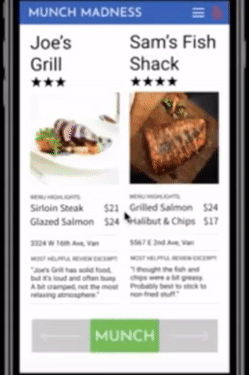

Sawyer Precious
Hi, I'm Sawyer. I'm a student at the University of British Columbia majoring in
both business and computer science. Pursuing the BUCS program has allowed me to
expand my knowledge in two areas that I'm passionate about. I've had the
opportunity to improve my coding skills as well as gain an understanding of how
successful organizations operate. Going to UBC has also allowed me to continue
my rowing career.
For the past 10 years, I have been defined by the sport of rowing. My story as a
high-performance athlete began as an eighth grader. It came to an end when I
crossed the finish line in my last race at the end of March. In between, I fell in
love with the sport, made friends for life, and won multiple national championships.
More importantly, I learned how to push myself to my breaking point, and then push
just a little bit further. I learned to be the kid who needed to prove that he
belonged. I learned how to be the leader who gave his teammates a pat on the back
or a kick in the butt when they needed it. I learned the glory of victory and the
pain of defeat. Rowing taught me how to succeed both on and off the water.
These lessons colour how I approach my academic and professional life. I believe in
making ideas a reality, working to achieve goals, and using every possible
opportunity to improve. My attitude has allowed me to build leadership,
communication, and problem-solving skills in projects that I have been involved in
both in and outside of school. My main goal in life is to find the areas that I am
the most skilled in and leverage my knowledge to make an impact. Currently, my main
focus is bridging the gap between business and technology. Like I did in my rowing
career, I want to work hard every single day, build relationships, and win.
Technical Work Experience
Junior Software Developer
Zenxmed Innovations Inc.May 2018 - August 2018 | Vancouver, BC
- Worked with full-stack team to extend the functionality of the OpenXmed iPhone app, a Wikipedia-like tool used by physicians to improve client care and reduce misdiagnoses
- Built using Swift for the iPhone app and TypeScript for the backend
- Updated app to use collection views, allowing users to quickly navigate steps of medical algorithms
- Implemented searching functionality to allow physicians to quickly find information
- Created a commenting feature, enabling users to interact in real time
Junior Web Developer
Precious Guise Agencies Inc.December 2017 - March 2018 | Vancouver, BC
- Built a manufacturer’s agent’s website using HTML, CSS, and JavaScript
- Allowed large areas of the site to be used as links using the span tag
- Changed images depending on mouse position using the general sibling selector in CSS
Other Work Experience
Rental Department Manager
Bicycle Sports PacificMay 2016 – August 2017 | Vancouver, BC
- Reduced maintenance costs by analyzing and streamlining the reporting and ordering processes
- Managed inventory and reconciled cash and credit card payments at the end of each day
Head Learn To Row Coach
Vancouver CollegeMay 2015 – July 2015 | Vancouver, BC
- Improved athlete two-kilometer test times by over 10 seconds on average by using personalized plans
- Focused on teamwork, positive feedback, and mutual respect, leading to increased team morale and over 80% of rowers returning the following year, compared to a historical average of 65%
Wildfire Fighter
Valhalla Environmental ConsultingJune 2014 – August 2014 | Coldstream, BC
- Thrived in a high-stress environment unlike other previous experiences by learning new terminology and safety procedures quickly and thoroughly
- Instrumental in saving over 1000 houses at the Smith Creek Fire by communicating fire behaviour and containment strategy to coworkers and supervisors effectively
Personal App
May 2018
Originally, I used the app to keep reminders, notes, and recipes. I have continued to iterate on the its design and functionality as my needs change. One addition was building local notifications in to improve my experience with the reminder feature, as well as adding functionality to create recurring reminders. As I thought about investing more money into the stock market, I decided to implement an overview of my financial portfolio. I was able to get real-time summaries of my investments by using the Alpha Vantage API to track stock information and the Bank of Canada's Valet API to convert foreign currencies to Canadian Dollars.
Languages: Swift
APIs: Alpha Vantage, Valet
Database: SQLite
Query Engine
September 2017 - December 2017
This was a project for my Intro to Software Engineering (CPSC 310) class. I worked with a partner to create a middle layer of a database - inputs were users' queries, and outputs were tuples, stats, or other information that had been requested. To process information concurrently, we used promises. We also used REST endpoints to separate client and server. In order to efficiently transform, locate, and retrieve data, we used hash functions. Testing was done with Mocha and Chai. Collaboration was done using GitHub. My partner and I received a perfect grade on the final phase of the project.
Buses Are Us
January 2017 - April 2017
Completed as the final project for my Software Construction (CPSC 210) class. The project was to create an Android app in Java that provided bus route information around Vancouver. I used TransLink's Open API to retrieve bus route, stop, and schedule information, and built JSON parsers to interpret that data. By using the singleton design pattern, I was able to ensure that bus stops and routes were accessible throughout the entire application. When clicking on a bus stop, users were shown bus routes overlaid on the map. If they wanted more information, they could click a button to get real-time information on arrival times and delays. Testing was done with JUnit and I simulated the app's display using Genymotion. I received a grade of 100% on the project.

Languages: Java
APIs: Translink Open API
Testing: JUnit
Other tools: Genymotion
Mind Palace
January 2019 - April 2019
I was inspired to create this project after learning about the method of loci,
which is a memory technique that uses visualization as a memory aid. The method
of loci involves a user creating a "mind palace" - a route of a real-world
location that they are familiar with. The idea behind the project was to
simplify the process of committing a mind palace to memory. Users take pictures
that serve as the points on the route. Along that route, users can insert
visual cues to help them remember something, from grocery lists to key points in
a presentation. I decided to try to create a sense of augmented reality through
the use of emojis and functionality heavily inspired by Snapchat's stickers.
Awarded "Most Innovative Project" by panel of industry judges.

AR App
July 2016 - August 2016
Inspired by Pokemon Go, I wanted to understand more about how AR worked. I created a simple app to teach myself about augmented reality. The app allowed the user to create a single character who could complete simple tasks.

Languages: Swift
Other tools: ARKit, SceneKit
Image Manipulator
December 2017
The final assignment for my Algorithms and Data Structures class (CPSC 221) was to create a C++ program that could perform basic changes to images. It used quad trees to allow for easy location of pixels in relation to their parents. The finished program allowed a user to specify a change to make (for example, rotate, prune, mirror, etc.).
Languages: C++
Munch Madness
November 2018 - December 2018
Built as the final project for my Human Computer Interactions (CPSC 344) class. The idea was to gamify the process of choosing a restaurant. March Madness was a good metaphor for eliminating possible options one at a time by comparing two restaurants directly. User studies, interviews, and cognitive walkthroughs fed into the final design. It would be used as an addition to Yelp.
Front End: Figma
NBA Database
March 2018 - April 2018
This was a group project for a Databases class (CPSC 304). Users would select what information they wanted, which was then turned into a SQL query internally, and then the information was retrieved from the database. Swift was used for the front end for simplicity's sake. SQLite was an easy, built-in solution for database management and retrieval on the back end.
Frogger AI
April 2019
While I was studying for my Artificial Intelligence (CPSC 322) final exam, I decided to get some more hands-on experience with AI. I created an AI to play Frogger. I originally used a simple neural network, a basic genetic algorithm, and a fitness function based solely on distance travelled. After many iterations, I came up with a better fitness function and integrated the NEAT algorithm into the selection and reproduction process.
Languages: Java
Front End: JPanels
Algorithm: Neuroevolution of augmenting topologies (NEAT)
Personal App
May 2019
I named this project after the Cambrian Explosion. Creatures went through an evolution simulator where the individuals who ate the most food had a higher chance of passing on their genes. Through random mutation and natural selection, creatures evolved to have different body parts and different connections in their "brains", which affected their behaviour.


What Inspires Me
These videos are long, but I highly recommend checking them out if you have time.
Rowing
How I learned to deal with victory and defeat
My rowing story began in grade
eight. I had just started high school at Vancouver College and joined the team
mostly to make friends. That decision turned out to be one of the best decisions I
have ever made, and it changed my life forever.
Through rowing, I learned to work hard. I also learned how to be a good teammate.
Rowing is unique in its team structure, since each person in the boat must perform
the same precise motions in unison, and a mistake from one rower can affect the
entire crew. There is no help defense or deep safety to cover up mistakes.
Everyone is responsible for themselves, and there needs to be a tremendous amount
of trust between teammates.
In grade ten, I went to nationals in Ontario for the first time and won the
heavyweight 4+ event. As sweet as
becoming a national champion was,
I learned more from my disappointing fourth place finish in my other race. I
started to work even harder, with extra workout sessions, eating better, and taking
better care of my body through stretching and physio. It paid off the following
year, when I won another national championship, this time on the senior level.
After losing a close race at
nationals the next year, I came to UBC. It was a totally different league. I had
been in the varsity boat for my entire high school experience, and I was relegated
to the JV boat for the first time in my life. It was a wakeup call. I took my
training to an even higher level and was able to make the varsity lightweight 4+ in
my second year, culminating in a second place finish at nationals. The drive to
win the gold medal motivated me through the rest of my rowing career.
The summer after my fourth year, I got the opportunity to compete in the
Windermere Cup in Seattle and
the Vanke
Cup
in China. Both races were watched by thousands of people and featured some of the
best rowing schools in the world - Harvard, Oxford, Cambridge, Sidney, Brookes, the
University of Washington, and others. My crew placed second at Windermere and
first in China.
I took on more of a leadership role in my fifth year. As the oldest and most
experienced rower in the lightweight 4+, I was voted captain. I had an
inexperienced crew and knew that we needed to put in extra effort to beat Queens,
who had two members of the national team in their boat. We took extra training
camps in Bellingham on top of our already rigorous schedule. It was because of our
teamwork and trust in one another that we were able to have the race of our lives.
We were able to overcome Queens to win the banner.
I've learned a lot over the past ten years. Leaving the sport will be a difficult
transition, but I'm looking forward to what comes next for me. The friends that I
have made and the life skills that I have gained will be with me forever, and I
will never forget the how it felt to cross the finish line with my brothers for the
last time.
Coding
How business school ignited my passion for technology
Going into university, I wasn't sure what I wanted to do yet. I chose to study
commerce, since I felt that having business knowledge would be useful no matter
where I chose to go in my career. I was mostly uninspired by marketing,
accounting, and many other common majors.
In my second year, though, I took a class called Management Information Systems.
It changed my life. I learned very basic coding, and I was hooked. After that, I
knew that I wanted to go into a field where I could combine my business knowledge
with technology. I chose to major in Business and Computer Science, a combined
major at UBC.
I was inspired by learning the kinds of solutions that technology provides -
creating systems to complete tasks that no human could achieve alone is where I
have found my passion.
Basketball
My journey as a fan
I got back into basketball in 2011. Though I didn't play it because of my rowing
commitments, I became an NBA fan. When it came time for me to choose a team, I
chose the Cleveland Cavaliers.
I enjoy watching basketball because each team has a unique style. The diversity of
the Spurs' offense looks completely different from the analytic-driven 3s and
layups philosophy of the Warriors and Rockets. The style that appealed the most to
me was the Cavaliers' clear division of roles among its players - on every
possession, it was one player's job to probe the defense, while others would cut,
screen, provide spacing from the 3 point line, or prepare to get an offensive
rebound. Dividing these responsibilities made each player's job simpler, and the
team benefitted overall.
The struggles and 20-win seasons in my early days as a fan only made the 2016
championship that much sweeter. The Cavs had been down three games to one, and no
one expected them to have a chance. No team had ever come back from a 3-1 defecit
in the NBA Finals. They fought every game and were able to force a seventh game.
After trailing in the second half, they tied the game at 89. No one could score
for what felt like an eternity until Kyrie Irving hit an unbelievable shot,
completing the comeback. Never giving up and believing in myself even when no one
else does are things that I try to replicate in my own life.
More About Me
These are some more of the things that I care about
My favourite podcasts
If you want to get in contact, feel free to shoot me an email!
Make sure to provide your email address and your name so I can get back to you